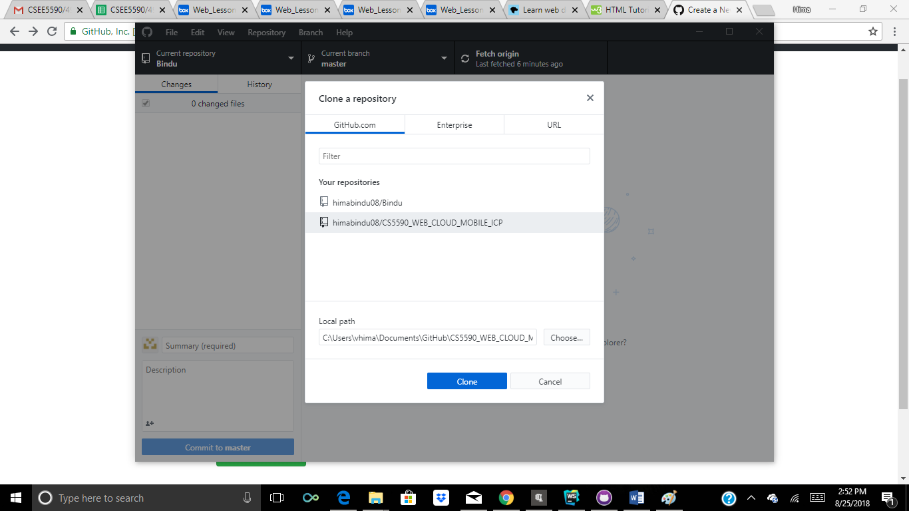
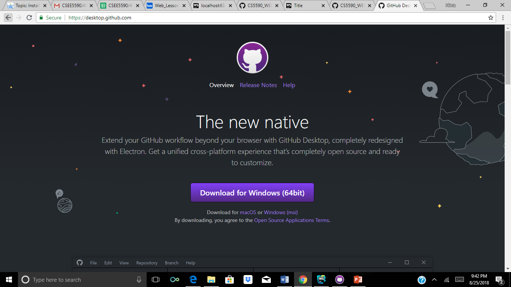

Step 1: Open the website www.github.com and signup by providing the required details
Step 2: After login,Create a new repository

Step 3: Clone the repository into local computer
Step 4: Download the git desktop application using the url www.desktop.github.com
Step 5: Add file to the project